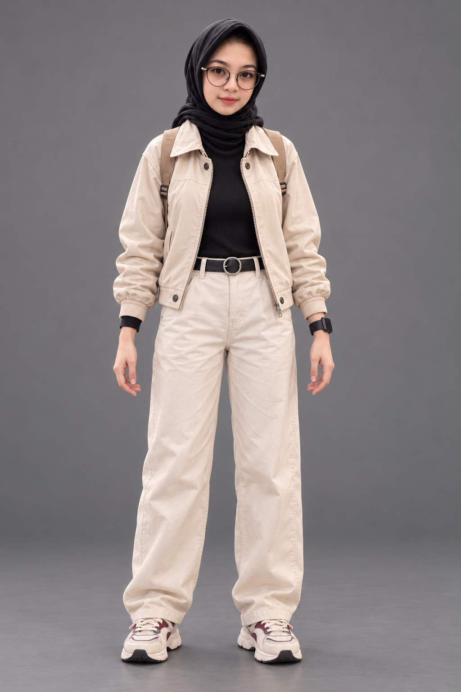
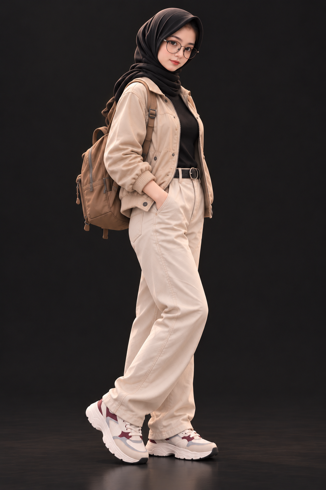

MENYIAPKAN KENANGAN…
AN ONGOING LOVE STORY✦ EST. 27
Hal-hal kecil,
yang berarti banyak.
Bukan cuma percakapan. Ini potongan hari, perhatian sederhana, dan cara kita tumbuh lewat kata-kata.


kind of view ♡A LITTLE PIECE
OF MYWINTER✳♡
THE MEMORY WALL / 01
Pick a little piece of us.
Ketuk kartu untuk membaca lebih dekat. Cari kata, tanggal, atau momen yang ingin kamu temukan lagi.
MEMORY FRAGMENTSTAP A CARD TO OPEN ↗
Merangkai potongan cerita…
✳
Setiap hal kecil punya tempatnya sendiri.
♡